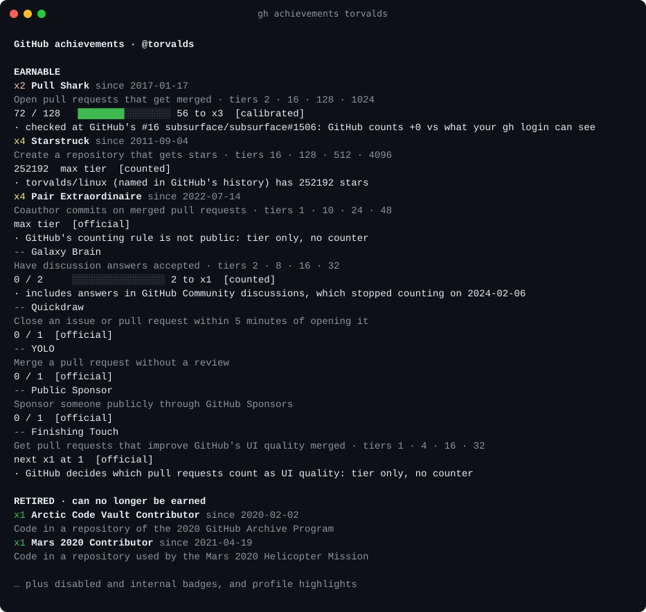

GitHub Achievements Checker
Check your GitHub achievements progress: every badge, your tier and how far to the next one, verified against GitHub's own data, no token needed.
gh extension install nmloc/gh-achievements
gh achievementsNeeds the GitHub CLI. Add a username to check anyone: gh achievements torvalds.

What it shows
- Every achievement. All 15 known badges (8 earnable, 2 disabled, 2 retired, 3 internal) and 6 profile highlights, not just the ones you have.
- Your tier and the next one. A progress bar to the next threshold, e.g. 72 of 128 merged pull requests for Pull Shark x3.
- Checked against GitHub. Tiers, unlock dates and milestones come from GitHub's own badge history. Pull Shark's count is calibrated against the pull requests GitHub names. How accurate is it?
- No stored token. The CLI reuses your
gh auth loginand talks only to GitHub. The web checker signs in with GitHub, uses the token for one check and revokes it.
Every GitHub achievement
| Achievement | How to earn it | Tiers | Status |
|---|---|---|---|
| Open pull requests that get merged | 2 · 16 · 128 · 1024 | Earnable | |
| Create a repository that gets stars | 16 · 128 · 512 · 4096 | Earnable | |
| Coauthor commits on merged pull requests | 1 · 10 · 24 · 48 | Earnable | |
| Have discussion answers accepted | 2 · 8 · 16 · 32 | Earnable | |
| Close an issue or pull request within 5 minutes of opening it | one tier | Earnable | |
| Merge a pull request without a review | one tier | Earnable | |
| Sponsor someone publicly through GitHub Sponsors | one tier | Earnable | |
| Get pull requests that improve GitHub's UI quality merged | 1 · 4 · 16 · 32 | Earnable | |
| React to something on GitHub with a ❤️ emoji | ? · 16 · 128 · ? | Disabled (tested, not earnable now) | |
| Have pull requests merged in several public repositories | ? · 8 · 16 · 64 | Disabled (tested, not earnable now) | |
| Code in a repository of the 2020 GitHub Archive Program | one tier | Retired (no longer earnable) | |
| Code in a repository used by the Mars 2020 Helicopter Mission | one tier | Retired (no longer earnable) | |
| GitHub staff: contributed to the Proxima proof of concept | one tier | Internal (GitHub staff only) | |
| GitHub staff: shipped the Proxima staffship instance | one tier | Internal (GitHub staff only) | |
| GitHub staff: your team was onboarded to Proxima | one tier | Internal (GitHub staff only) |
FAQ
- How do I check my GitHub achievements progress?
- Install the GitHub CLI extension with `gh extension install nmloc/gh-achievements` and run `gh achievements`. It lists every achievement, your tier and how many more you need for the next one. Add a username to check someone else.
- Does gh-achievements need a GitHub token?
- No. It reuses the login of the GitHub CLI (gh auth login). Without a login it still works with public data.
- How many GitHub achievements are there?
- 15 are known as of 2026-10-17: 8 earnable, 2 disabled, 2 retired, 3 internal. There are also 6 profile highlights such as Pro and Developer Program Member.
- How accurate is it?
- Tiers and unlock dates come straight from GitHub's profile pages. Pull Shark's count is checked against the milestones GitHub names. Every number is labelled official, calibrated or counted.
- Why don't my achievements show on my profile?
- Achievements can be turned off under Settings → Public profile → "Show Achievements on my profile". gh-achievements says when a profile hides them and shows live counts only.
- Is gh-achievements made by GitHub?
- No. It is an independent open source project and is not affiliated with or endorsed by GitHub.